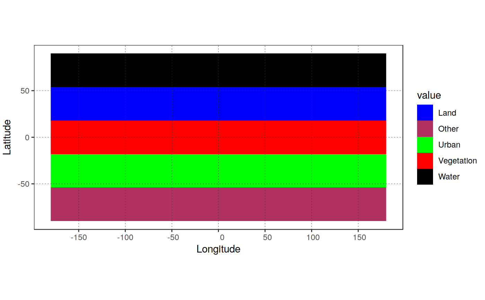

R/set_rastlabels.R
set_rastlabels.RdAssign labels and plotting colors to a categorical raster
set_rastlabels(in_rast, class_names = NULL, class_colors = NULL, verbose = TRUE)
| in_rast | a categorical |
|---|---|
| class_names |
|
| class_colors |
|
| verbose |
|
a 'Raster' object equal to in_rast to which a Raster Attribute table
has been added (see raster::ratify)
Simple wrapper around raster::ratify, providing the added
functionality of specifying specific names for the classes.
library(raster) library(dplyr) in_rast <- raster::raster(ncol = 5, nrow = 5) %>% raster::init("row") levels(in_rast)[[1]]#> NULL# categorize and assign standard class names cat_rast <- set_rastlabels(in_rast)#>#> Warning: set_rastlabels --> class_names not provided or not matching the number of classes of in_rast. #> Class names will beignored!#> ID Class Color #> 1 1 1 #F8766D #> 2 2 2 #A3A500 #> 3 3 3 #00BF7D #> 4 4 4 #00B0F6 #> 5 5 5 #E76BF3# categorize and assign custom class names cat_rast <- set_rastlabels(in_rast, class_names = c("Water", "Land", "Vegetation", "Urban", "Other"))#>#> ID Class Color #> 1 1 Water #F8766D #> 2 2 Land #A3A500 #> 3 3 Vegetation #00BF7D #> 4 4 Urban #00B0F6 #> 5 5 Other #E76BF3#' # categorize and assign custom class names and colors cat_rast <- set_rastlabels(in_rast, class_names = c("Water", "Land", "Vegetation", "Urban", "Other"), class_colors = c("blue", "maroon", "green", "red", "black"))#>#> ID #> 1 1 #> 2 2 #> 3 3 #> 4 4 #> 5 5# Class names are automatically recognized by [`plot_rast_gg`] plot_rast_gg(cat_rast, scalebar = FALSE)